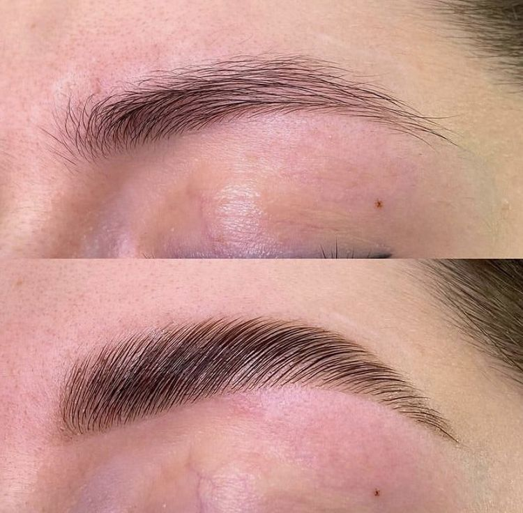
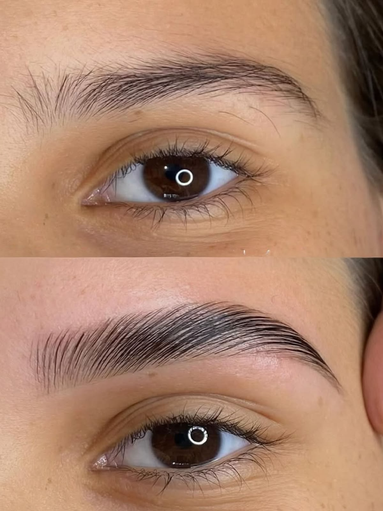

Diseño · Laminado · Tinte · Granollers
Laminado de cejas en Granollers: Natural Brow, con diseño y tinte
Natural Brow™ es el protocolo propio de Nohuska Beauty Lab para diseño, laminado y tinte de cejas. Trabaja sobre tu pelo natural, sin micropigmentación, con forma, dirección y tono adaptados a tu rostro.
55 € · cita de aproximadamente 1 hora. Valoración gratuita antes de elegir el acabado.

Qué es Natural Brow
Tus cejas, mejor dirigidas y definidas.
No todas las cejas necesitan pigmento. Cuando existe pelo suficiente, podemos mejorar visualmente la forma mediante un diseño preciso, orientar temporalmente el pelo con laminado y aportar definición con coloración.
¿Quieres saber si encaja contigo?
- Tienes pelo, pero crece desordenado o hacia abajo.
- Buscas definición sin micropigmentación.
- Quieres ver un cambio real antes de valorar micropigmentación.
Trabajo propio · Publicación autorizada
Cómo leer nuestros resultados de Natural Brow

Un resultado visible no es una promesa de duración
El laminado ordena el pelo existente y el tinte aporta definición temporal. Esta imagen permite comparar el acabado de ese caso, pero no demuestra cuánto durará en tu ceja ni cuánto tiempo se mantendrá el color.
La imagen de portada corresponde a otro caso propio. Para elegir el acabado valoramos tu densidad, dirección de crecimiento y tono; no copiamos una ceja de una fotografía.
Ver otro caso de Natural Brow y sus límites en Results Lab →
Opiniones publicadas en Google: 5,0/5 · 33 reseñas del centro. Dato consultado el ; no es una puntuación específica del laminado.
Natural Brow · combinación personalizada
Cómo trabajamos el laminado y tinte de cejas
En Nohuska, el laminado o Brow Lift forma parte de Natural Brow. La dirección del pelo y el tono se eligen contigo; no buscamos la misma ceja peinada hacia arriba en todos los rostros.
Si buscas laminado de cejas en el Vallès Oriental, la cita de Natural Brow se realiza en Nohuska Beauty Lab, Avinguda Sant Esteve, 40, 08402 Granollers. Si te desplazas desde otra localidad, consulta disponibilidad antes de organizar la visita.
Elige qué quieres cambiar antes de reservar
El laminado ordena el pelo existente, pero no crea pelo nuevo ni rellena por sí solo una zona sin vello. Para comparar presupuestos, comprueba si el servicio incluye solo laminado o también diseño y tinte.
| Tu objetivo | Qué cita valorar |
|---|---|
| Ordenar el pelo y definir forma y tono | Natural Brow™ · 55 € · aprox. 1 hora Valoración, diseño, laminado y tinte. El tinte está incluido en los 55 €, no es un suplemento. |
| Trabajar cejas y pestañas en la misma cita | Korean Gaze™ · 85 € · aprox. 90 minutos Natural Brow más lifting coreano con tinte de pestañas. No incluye extensiones ni micropigmentación. |
| Cambiar solo la forma o el color | Diseño y depilación o tinte de cejas solo de 25 € o híbrido de 35 €, sin laminado. Son servicios separados de Natural Brow; confirma la modalidad antes de reservar. |
| Completar visualmente zonas sin pelo | Valoración de micropigmentación de cejas. Es otro procedimiento: valoramos piel, pelo y pigmentación anterior antes de elegir técnica y presupuesto. |
Una foto actual sin maquillaje y con luz natural nos ayuda a orientarte. La confirmación se hace en persona, observando el pelo y la piel.
Consultar qué me convienePrecio y preguntas sobre el laminado de cejas Natural Brow
¿Qué incluye el laminado de cejas Natural Brow?
Natural Brow incluye valoración, diseño de la forma, laminado para orientar el pelo existente y tinte de cejas. Acordamos la dirección y la intensidad del color antes de empezar. La cita dura aproximadamente 1 hora; si el pelo o la piel no permiten realizar el protocolo, lo revisamos contigo antes de confirmar el servicio.
¿Qué diferencia hay entre Natural Brow™ y Korean Gaze™?
Natural Brow™ es el protocolo propio de cejas de Nohuska: diseño, laminado y tinte, por 55 € en aproximadamente 1 hora. Korean Gaze™ incorpora Natural Brow y lifting coreano con tinte de pestañas, por 85 € en aproximadamente 90 minutos. Ambos requieren valorar el pelo natural; no incluyen micropigmentación.
¿Es micropigmentación?
No. Es un tratamiento no permanente que trabaja el pelo existente. Si hay zonas sin densidad, valoramos por separado si conviene micropigmentación.
¿Se puede combinar laminado y tinte?
Sí, cuando ambas técnicas encajan con el pelo y el resultado buscado. El laminado orienta el pelo y el tinte aporta definición temporal.
¿Cuánto dura la cita de Natural Brow?
La cita dura aproximadamente 1 hora. Este tiempo corresponde a la sesión, no a la duración del efecto del laminado o del tinte.
¿Cuánto dura el resultado del laminado y del tinte?
Según la experiencia de Nohuska, la dirección del pelo tras Natural Brow suele mantenerse unas 5–6 semanas. El tinte sobre la piel suele durar unos 7–9 días; ese plazo no describe su duración sobre el pelo. Son orientaciones, no garantías: la evolución depende de cada ceja y de sus cuidados. La cita dura aproximadamente 1 hora.
¿Qué cuidados indicáis después de Natural Brow?
En Nohuska indicamos no mojar las cejas durante las primeras 48 horas. Después del tratamiento hay que peinarlas e hidratarlas con un sérum compatible, siguiendo las pautas de la cita y confirmando cuándo empezar a aplicarlo. No recomendamos utilizar cualquier producto por defecto ni repetir el laminado sin valorar antes el estado del pelo.
¿Cuánto cuesta el laminado de cejas con diseño y tinte?
El precio del servicio completo Natural Brow es de 55 € e incluye diseño, laminado y tinte de cejas, en una cita de aproximadamente 1 hora. El tinte no se suma como un suplemento a esos 55 €. Si buscas solo diseño o coloración sin laminado, es otro servicio y confirmamos su presupuesto antes de reservar.
¿Dónde se realiza?
En Nohuska Beauty Lab, Avinguda Sant Esteve, 40, 08402 Granollers, con cita previa.
¿La valoración es gratuita?
Sí. Revisamos el pelo, la forma y el efecto que buscas antes de elegir la combinación de técnicas.
Más opciones para tus cejas
Preparación y mantenimiento
Qué contarnos antes de tu Natural Brow.
Indica si te has realizado laminado, tinte u otros tratamientos de cejas recientemente y si has tenido sensibilidad con algún producto. Si nos envías una fotografía para orientarte, hazla con luz natural y sin maquillaje de cejas.
Las pautas de cuidado y la duración orientativa están reunidas en las preguntas de Natural Brow. Ese plazo no es una fecha automática para repetir el laminado: primero valoramos el estado del pelo.
Para valorar el acabado, puedes revisar el caso real autorizado de Natural Brow. La fotografía muestra forma y dirección del pelo; no demuestra cuánto durará el efecto en otra persona.
Una consulta por WhatsApp no confirma una reserva. Acordaremos contigo el tratamiento, la fecha y la hora.
Consulta tu cita de Natural Brow.
¿Buscas ordenar el pelo y definir tus cejas sin micropigmentación? Natural Brow combina diseño, laminado y tinte según la valoración de tu pelo y piel. Cuéntanos qué te gustaría mejorar y qué días te van bien. Confirmaremos tratamiento, tarifa y horario contigo.